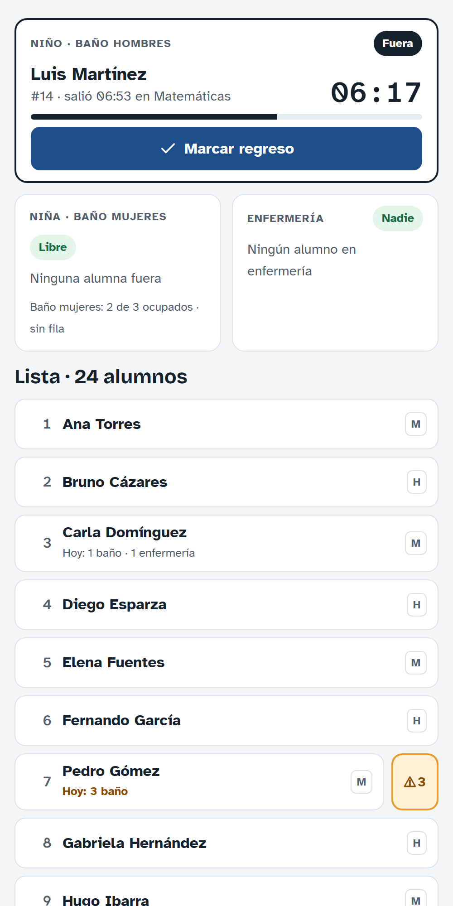
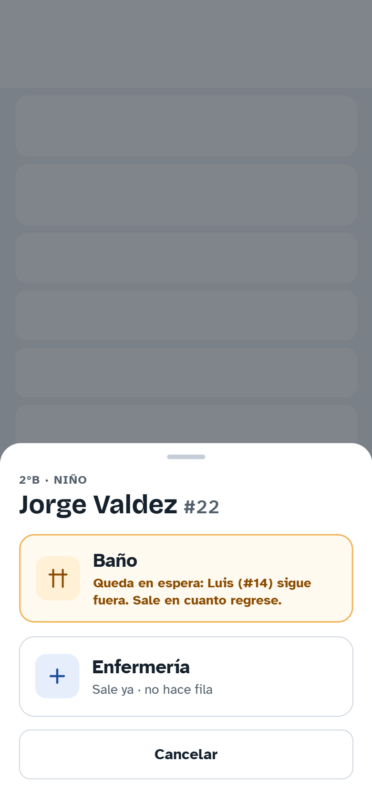
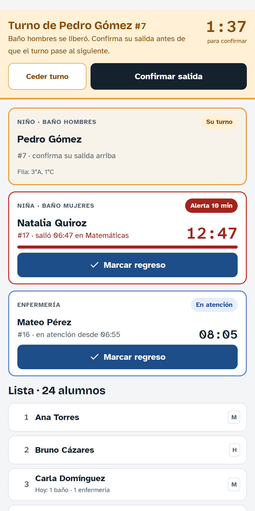

Con la app das permiso para ir al baño con un toque. El sistema decide si el alumno sale, lo forma en la fila y avisa si tarda. El alumno no toca nada.
Antes de empezar (solo una vez)
1
Entra con tu correo de la escuelaAbre pase-oviedo.vercel.app en Chrome (Android) o Safari (iPhone). Toca Entrar con Google y elige tu correo @institutooviedo.edu.mx.
2
Instala la appVe a Perfil y toca Instalar app. En iPhone: botón Compartir de Safari → Agregar a inicio. Después abre siempre el ícono Pase.
3
Activa las notificacionesEn Perfil → Notificaciones toca Activar y acepta el permiso. Toca Enviar prueba: debe llegarte un aviso.
4
Crea tu PIN de 4 dígitosEn Perfil → Definir mi PIN. Es solo tuyo: con él desbloqueas la computadora del salón. No lo compartas.
En Perfil también ves tu horario: en qué clase estás ahora y cuál sigue.
Pase Sanitario · Instituto Oviedo1
Dar un pase al baño

Mi grupo · datos de ejemplo
1
Abre Mi grupoAparece solo el grupo que tienes a esta hora. Si das clase en otro grupo (suplencia), cámbialo arriba.
2
Toca el nombre del alumnoPuedes buscarlo por nombre o número de lista.
3
Toca BañoEl baño de hombres o de mujeres se elige solo. Por ahora usa solo Baño.

Qué puede pasar
Sale yaHay lugar: el alumno sale y empieza a correr su tiempo.
En filaEl baño está lleno. Cuando le toque, te avisará la app.
Espera de su grupoYa hay alguien de su grupo y su mismo sexo afuera. Sale en cuanto regrese.
Pase Sanitario · Instituto Oviedo2
Su turno, regreso y alertas

Turno y alerta · datos de ejemplo
1
“Turno de…” (franja amarilla)Le tocó salir al alumno que estaba en fila. Toca Confirmar salida cuando salga. Tienes 2 minutos; si no, el turno pasa al siguiente.
2
Cuando regreseToca Marcar regreso. Así se libera el lugar para el siguiente.
3
¿Te equivocaste?Toca Deshacer en los 10 segundos siguientes.
4
Alerta de 10 minutosSi tarda más, la tarjeta se pone roja y te llega un aviso. Prefectura va a buscarlo. También lo ves en la pestaña Alertas.
El color nunca es lo únicoCada estado dice su nombre: Fuera, En fila, Su turno, Alerta. El cronómetro marca cuánto tiempo lleva afuera.
Pase Sanitario · Instituto Oviedo3
Reglas rápidas
1
Un niño y una niña por grupo a la vezEn horas de Inglés se cuenta por salón.
2
Baño de hombres: 1 · Baño de mujeres: 3Si está lleno, el alumno queda en la fila y se le llama en orden.
3
En Inglés la lista cambia solaVerás a los alumnos de tu nivel (básico, intermedio o avanzado), con su grupo junto al nombre.
4
Al cambiar de clase no se cierra nadaSi un alumno sigue afuera, el siguiente maestro lo ve con “salió en…”. Al final del día se cierran solos los pases olvidados.
Dudas comunes
No puedo entrarUsa tu correo @institutooviedo.edu.mx. Si dice que no estás registrado, avisa a coordinación.
No me llegan avisosAbre la app desde el ícono, ve a Perfil → Notificaciones y toca Activar. Prueba con Enviar prueba.
Olvidé mi PINCréalo de nuevo en Perfil → Cambiar mi PIN.
Falta un alumno o un dato está malAvisa a coordinación para que lo corrija.
Ayuda: si algo no funciona, avisa a coordinación o al administrador del sistema.